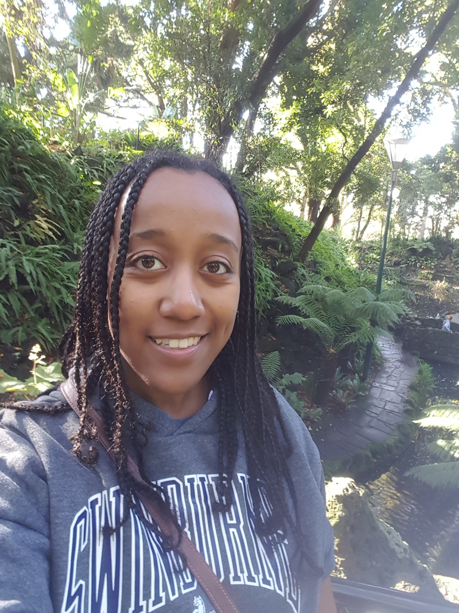
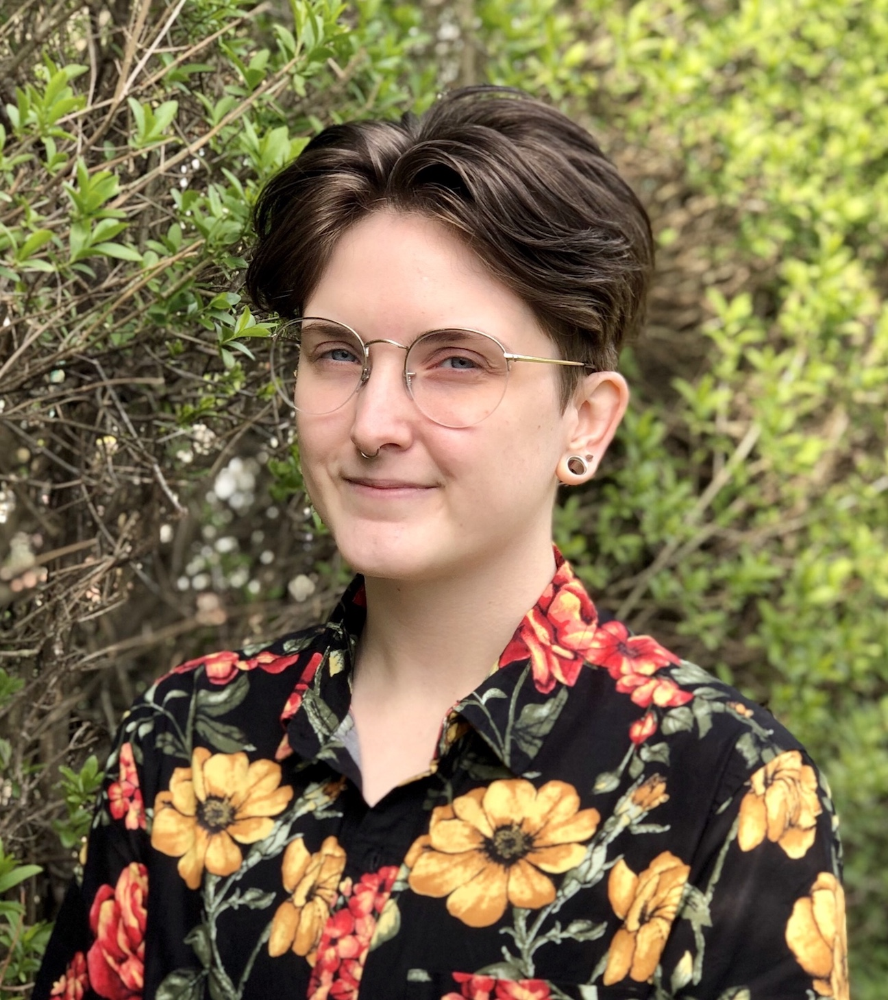
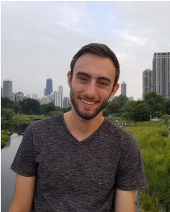
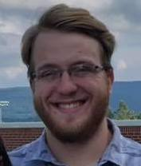

We are all researchers at the Leonard E Parker Center for Gravitation, Cosmology and Astrophysics (CGCA) at the University of Wisconsin-Milwaukee. Here are just a few snippets of what we're interested in...
Lulu Agazie |
Amanda Baylor |
| “ I started graduate school at UWM in 2020, and my research is focused on studying pulsars. I first got involved in pulsar research as an undergraduate at West Virginia University, where I had the opportunity to learn how to take and analyze data on the Robert C. Byrd Green Bank Telescope. My hobbies include biking, playing the harp, and hiking. ” |
“ I fell in love with physics my senior year of high school and had a strong desire to investigate distant phenomena in our universe. I then began my studies in optical astronomy at Dickinson College, researching binary star systems and astrophysical spectra. In 2019 I traveled to Australia to perform research in gravitational wave astrophysics, which I continue to do after joining the PhD program at UWM in 2020. When I’m not searching for black holes and neutron stars, I enjoy running by the lake, reading, and caring for my house plants. ” |
Sinead Humphrey |
Annalisa Citro |
| “ I’ve always loved science and science fiction; I did my undergrad at DePaul University in Chicago where I chose to major in physics in order to get a little closer to my childhood dream of working on the Starship Enterprise. I am now a PhD student at UWM. I study computational astrophysics, performing simulations of events such as tidal disruptions and supernovae. Outside of physics, I like baking bread, sewing, and playing video games. ” |
“ Ever since I was a child, looking at the sky has made me feel very calm and given me a feeling of peacefulness. And now that I have grown up, it also makes me feel at home...Wherever I am! Understanding what is happening above our heads while we are living our lives here on Earth helps me to value our precious place in the Universe. These are some of the reasons why I decided to try to become an astrophysicist. When I'm not working, I love playing music, drawing, admiring nature and learning from people and things around me. ” |
Gabe Freedman |
Alex McEwen |
| “ I look at space as the final frontier, the last great unknown for us to venture into and explore. I believe that studying the world beyond our planet and beyond our solar system can help us better understand and appreciate our place here on Earth. I joined the PhD program at UWM in 2019, and my research focuses on searching for low frequency gravitational waves using pulsar timing arrays. Specifically I look into modern computational methods for performing these searches and making the analyses tractable. Outside of my studies, I’m a lifelong pianist and avid tennis player. And a big Yankees fan.” |
“ Growing up in a small Appalachian town in western Maryland, I spent many nights outside with my brothers listening to dad name all of the constellations. As I grew older, I developed an interest in understanding things - and the more I understood, the more I realized there was to learn! I started my astronomy career partway through an engineering internship when I was given a telescope for my birthday and decided to change my major to physics. I started studying pulsars - neutron stars that rotate at incredible rates and emit radio waves - as soon as I returned to school, and I haven't stopped yet. Outside of school/work life, I spend a lot of my time making music, woodworking, biking, swimming, and camping.” |
Mark Poe |
Siddharth Mohite |
| “ Having been a long-time audio engineer and musical performer, I became interested in the wave mechanics of sound in the studio. Coupling this with a fascination of space physics, I was led down a path where I ended up enrolling as a university student in physics. Now, as a graduate student, I am continually fascinated to learn that pretty much everything operates with the same basic properties of wave motion, from subatomic particles to the background of the universe and even the motion of space itself. Research in astrophysics has taken me on a very rewarding journey mentally, but also a physical one as well, in that I was invited to travel to research dark energy cosmology at Stockholm University in 2018. In my free time, I enjoy hiking epic scenery in parks, producing a variety of musical projects, and studying traditional Japanese martial arts.” |
“ I was 'hooked on' astronomy when as a school kid I made my first telescope and looked at the moon. I was amazed at the amount of detail I could see, albeit it was a basic telescope. But this left me wanting for more; to know about things further away - the planets, stars and galaxies! My academic endeavor, ever since, has therefore been in the domain of astrophysics. I completed my undergraduate education from my home country of India and came to UWM as a doctoral student in 2016. My research is focused within the exciting new field of gravitational-wave astronomy which has opened a new window of observing the universe, helping us know about exotic, mysterious objects such as black holes and neutron stars. In my spare time apart from research, I love to play and watch cricket, cook and travel.” |
Brandon Piotrzkowski |
Allie Spaulding |
| “ Although interested in math and science as a kid, I discovered how fascinating physics was in college and decided to pursue it until I wasn't interested anymore. Well, I'm still here! I now work with the LIGO scientific collaboration on multimessenger astronomy, which means I'm interested in seeing objects with both gravitational waves and light and whatever else we can use! It's like watching TV with both the screen and the sound on: you get so much more info. When not working on physics I like to write, mix/record, and perform music.” |
“ Growing up in small city gave me the opportunity to look up and see tons of stars any night that I wanted to. That fascination in exploring the universe led me to pursue a Physics degree at Loyola University Chicago. I knew I wanted to continue my Physics career as a graduate student, specifically focusing on astrophysics which is why I ended up at UWM. I am pursuing my PhD with my research focusing on simulating and analyzing different astrophysical phenomena such as tidal disruption events, disk dynamics and various other aspects of theoretical astrophysics. I love that even though we might not be able to actually see everything that’s going on in the universe, we have enough tools and technology to simulate and study so much of it. Outside of school, I like to read, travel, play volleyball and spend time with my family and friends.” |
Ian Brown |
|
| “ I have been interested in science for as long as I can remember. I grew up outside of a town with a population of about 500 people so I always had great views of the stars on clear nights. I was also lucky enough to have parents who encouraged my curiosity and showed me the stars and constellations. I naturally became curious and wanted to know about what I saw. I decided to make a career out of my curiosity and came to UWM in 2016 where I have been researching fast radio bursts. When time permits, I still like to go camping out away from the city lights to see a meteor shower or just admire the beautiful complexity of the cosmos. ” |
|
Pratyusava Baral |
Sarah Villanova Borges |
Hall of Fame
(Previous CoffeeShop Astrophysics group members)
Sydney Chamberlin (Founder of CoffeeShop Astrophysics)
Laura Nuttall
Megan DeCesar
Laleh Sadeghian
Alex Urban
Sarah Caudill
Danielle Berg
Debnandini Mukherjee
Hong Qi
Shasvath Kapadia
Sarah Vigeland
Kristina Islo
Shaon Ghosh
Angela Van Sistine
Joseph Swiggum
Casey McGrath